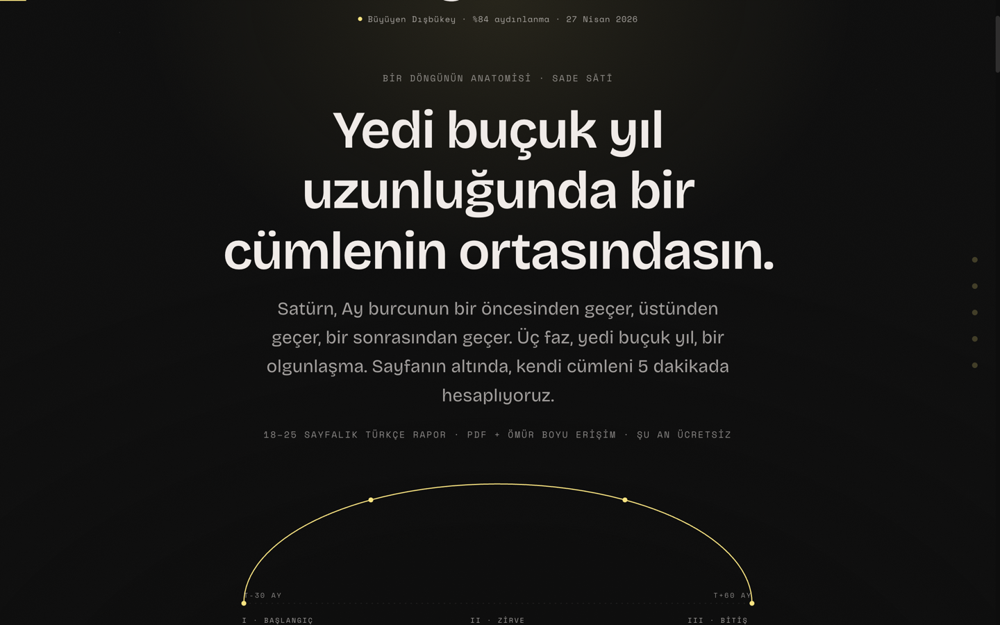
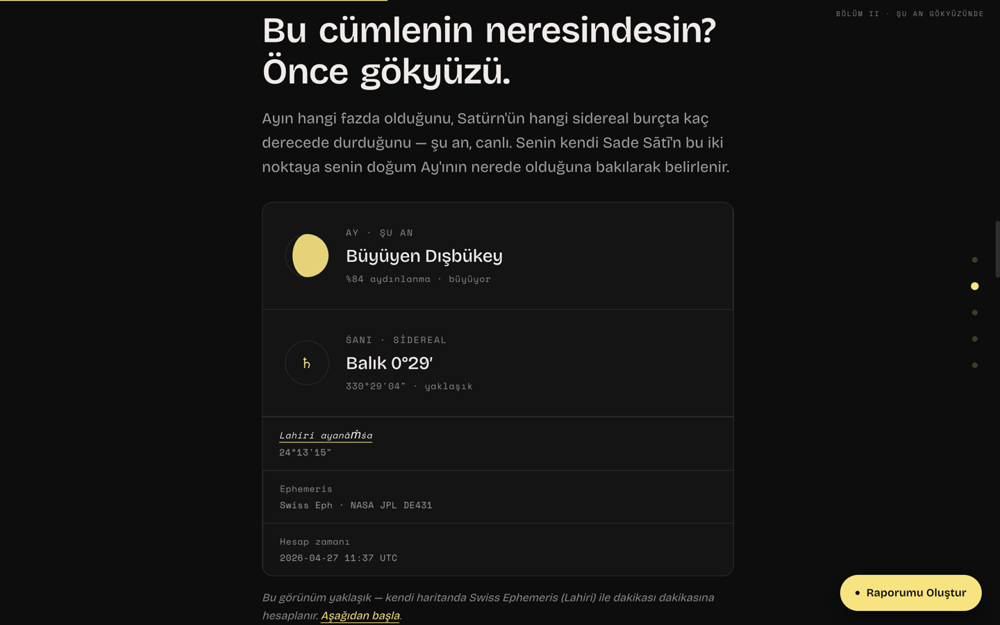
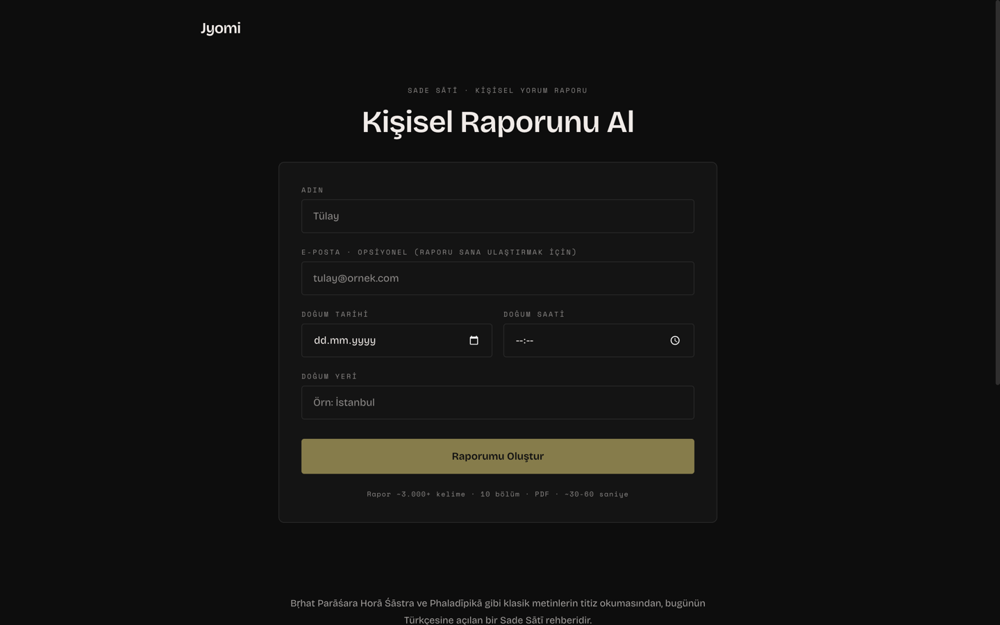

Jyomi
What Jyomi is
A platform for one report — Sade Sātī, the 7.5-year transit of Saturn. Live since 23 April 2026, in Turkish. No expert face in the header: trust is carried by the classical sources and the precision of the math, not by a portrait.

The Moon is not a logo, it’s a clock
The “o” in Jyomi is the current Moon phase. A server component calls suncalc and ships a real Moon SVG on every render. No cron, no releases — the wordmark shifts naturally about every 3.5 days.
The sky shown openly
The landing displays live coordinates: Moon, Saturn, Lahiri ayanāṃśa, ephemeris source, UTC timestamp. Real astronomy runs underneath, and the site shows it in the hero — not buried in an FAQ.

One report, ten chapters
Seven products on the roadmap — natal chart, synastry, daśā forecasts — were postponed. At launch the platform does one thing: it computes a personal Sade Sātī timeline, explains the current phase, and ships a 3,000-word PDF in ten chapters. Streaming through Claude: text starts arriving immediately, the full report assembles in 30–60 seconds.
Chapters
- Your personal chart
- How to read this report
- Where you are right now
- Sensitive windows
- What the sky is telling you
- What you might notice in the body
- What may help you
- Things worth thinking about
- Things to remind yourself
- A final word
Under the hood
Closed beta right now: paid mode sits behind a feature flag, waiting on iyzico approval for the Turkish entity. Reports are free while the team runs them against real data.
Stack
- Frontend — Next.js 16 + Tailwind v4
- Hosting — Railway behind Cloudflare
- Charts — Swiss Ephemeris in WASM, local, Lahiri ayanāṃśa
- Streaming — Claude Sonnet 4.6
- PDF —
@react-pdf/renderer - Database — Neon Postgres
- Payments — iyzico
- Type — Bricolage Grotesque + Space Mono

How I built it
Solo. Brand, product (one offering at launch instead of seven), all the code — from landing to PDF, infra, taxes.
With Duygu Akartuna — Vedic practitioner, PhD, author of a book on Saturn — on the substance and review of every chapter. I do product and code; she carries the knowledge and the voice.
What else shipped around the report: 47 articles on Vedic astrology at /ogren (SSG + JSON-LD), four transactional emails coloured by graha (Saturn purple, Sun gold), a 1080×1920 nakshatra share card for Instagram Stories, a generative sigil watermark on the PDF. Part of this assembled in a single evening across six parallel agents in git worktrees — cherry-picked in dependency order, conflicts only on additive imports.
Next: flip paid mode through iyzico, ship the other six reports from the roadmap, English version after.